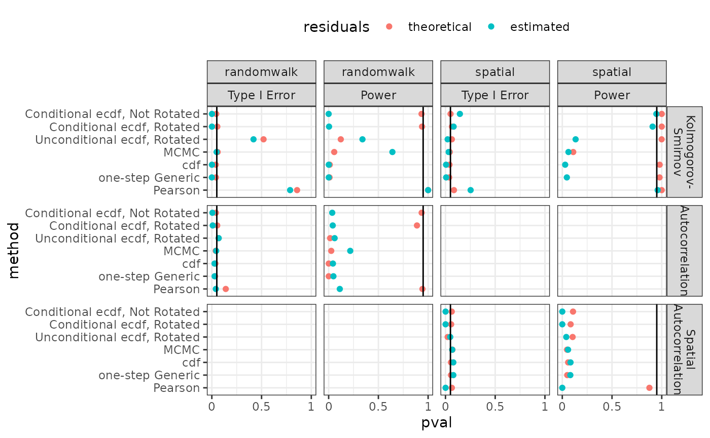

Results
TMB-validation-figures-results-overall.RmdTest Comparison
df.err <- pvals %>% dplyr::filter(., version == "h0" &
(model == "randomwalk" | model == "spatial") &
(test == "Lilliefors" | test == "Anderson-Darling" |
test == "Kolmogorov- Smirnov" )&# |
# test == "Autocorrelation" |
# test == "Spatial Autocorrelation") &
(method != "Unconditional ecdf, Not Rotated" & method != "Pearson")) %>%
group_by(., do.true, test) %>%
select(., "pvalue") %>%
summarize(., 'pvalue' = sum(pvalue <= 0.05)/sum(pvalue >= 0))## Adding missing grouping variables: `do.true`, `test`
## `summarise()` has grouped output by 'do.true'. You can override using the
## `.groups` argument.
#df.err %<>% pivot_wider(., names_from = misp.type, values_from = 'Type I Error')
df.err$version <- "Correct"
df.pow <- pvals %>% dplyr::filter(., version != "h0" &
(model == "randomwalk" | model == "spatial") &
(test == "Lilliefors" | test == "Anderson-Darling" |
test == "Kolmogorov- Smirnov" )&# |
# test == "Autocorrelation" |
# test == "Spatial Autocorrelation") &
(method != "Unconditional ecdf, Not Rotated" & method != "Pearson")) %>%
group_by(., do.true, test) %>%
select(., "pvalue") %>%
summarize(., 'pvalue' = sum(pvalue <= 0.05)/sum(pvalue >= 0))## Adding missing grouping variables: `do.true`, `test`
## `summarise()` has grouped output by 'do.true'. You can override using the
## `.groups` argument.
df.pow$version <- "Mis-specified"
#df.pow %<>% pivot_wider(., names_from = misp.type, values_from = Power)
df.err.pow <- rbind(df.err, df.pow)
df.err.pow$type <- NA
df.err.pow$type <- ifelse(df.err.pow$version == "Correct",
"Type I Error", "Power")
df.err.pow$type <- factor(df.err.pow$type,
levels = c("Type I Error", "Power"))
df.err.pow$err_line <- 0
df.err.pow$err_line <- ifelse(df.err.pow$version == "Correct",
0.05, 0.95)
ggplot(df.err.pow, aes(pvalue, test)) +
geom_point(mapping = aes(color = do.true)) +
facet_grid(~type) + theme_bw() +
geom_vline(mapping = aes( xintercept = df.err.pow$err_line)) +
theme(legend.position = "top")
Method Comparison
df.err <- pvals %>% dplyr::filter(., version == "h0" &
(model == "randomwalk" | model == "spatial") &
(test == "Kolmogorov- Smirnov" |
test == "Autocorrelation" |
test == "Spatial Autocorrelation")) %>%
group_by(., do.true, test, method, misp.type) %>%
select(., "pvalue") %>%
summarize(., pvalue = sum(pvalue <= 0.05)/sum(pvalue >= 0))## Adding missing grouping variables: `do.true`, `test`, `method`, `misp.type`
## `summarise()` has grouped output by 'do.true', 'test', 'method'. You can
## override using the `.groups` argument.
df.err$err_line <- 0.05
# df.pow <- pvals %>% dplyr::filter(., version != "h0" &
# (model == "randomwalk" | model == "spatial") &
# (test == "Kolmogorov- Smirnov" |
# test == "Autocorrelation" |
# test == "Spatial Autocorrelation")) %>%
# group_by(., do.true, test, method, misp.type) %>%
# select(., "pvalue") %>%
# summarize(., pvalue = sum(pvalue <= 0.05)/sum(pvalue >= 0))
# #df.pow <- cbind(df.pow[,1:4], df.pow[,6], df.pow[,5])
#
# df.err.pow <- rbind(df.err, df.pow)
# df.err.pow$err_line <- ifelse(df.pow.err$misp.type == "Correct",
# 0.05, 0.95)
# %>%
# pivot_wider(names_from = method, values_from = c('Type I Error', Power))
#
# df.pow.err
# df.pow %<>% pivot_wider(., names_from = method, values_from = Power)
#
# df.err.pow <- cbind(df.err, df.pow[,4:13])
# df.err.pow
ggplot(df.err, aes(pvalue, method)) +
geom_point(mapping = aes(color = do.true)) +
facet_grid(~test) + theme_bw() +
geom_vline(mapping = aes( xintercept = df.err$err_line))+
theme(legend.position = "top")
Mis-specified Observation Model
df.corr <- dplyr::filter(pvals,( model == "spatial" | model == "randomwalk") &
method != "Unconditional ecdf, Not Rotated")
df.corr %>% dplyr::filter(., type == "LMM" & misp != "hsk") %>%
plot.err.pow(., misp.filter = c("Correct", "Misp. Data Model"), test.filter = c("Kolmogorov- Smirnov") )## `summarise()` has grouped output by 'test', 'misp', 'model', 'method',
## 'res.type'. You can override using the `.groups` argument.
df.corr %>% dplyr::filter(., type == "GLMM" & misp != "mu0") %>%
plot.err.pow(., misp.filter = c("Correct", "Misp. Data Model"), test.filter = c("Kolmogorov- Smirnov") )## `summarise()` has grouped output by 'test', 'misp', 'model', 'method',
## 'res.type'. You can override using the `.groups` argument.
Missing RE Model
df.corr %>% dplyr::filter(., type == "LMM" & method != "Unconditional ecdf, Not Rotated") %>%
plot.err.pow(., misp.filter = c("Correct", "Missing RE"), test.filter =
c("Kolmogorov- Smirnov", "Autocorrelation", "Spatial Autocorrelation") )## `summarise()` has grouped output by 'test', 'misp', 'model', 'method',
## 'res.type'. You can override using the `.groups` argument.
df.corr %>% dplyr::filter(., type == "GLMM" & method != "Unconditional ecdf, Not Rotated") %>%
plot.err.pow(., misp.filter = c("Correct", "Missing RE"), test.filter =
c("Kolmogorov- Smirnov", "Autocorrelation", "Spatial Autocorrelation") )## `summarise()` has grouped output by 'test', 'misp', 'model', 'method',
## 'res.type'. You can override using the `.groups` argument.
Mis-specified RE Model
df.corr %>% dplyr::filter(., type == "LMM") %>%
plot.err.pow(., misp.filter = c("Correct", "Misp. RE Model"), test.filter = c("Autocorrelation", "Spatial Autocorrelation", "Kolmogorov- Smirnov") )## `summarise()` has grouped output by 'test', 'misp', 'model', 'method',
## 'res.type'. You can override using the `.groups` argument.
df.corr %>% dplyr::filter(., type == "GLMM") %>%
plot.err.pow(., misp.filter = c("Correct", "Misp. RE Model"), test.filter = c("Autocorrelation", "Spatial Autocorrelation", "Kolmogorov- Smirnov") )## `summarise()` has grouped output by 'test', 'misp', 'model', 'method',
## 'res.type'. You can override using the `.groups` argument.